Hematite
| 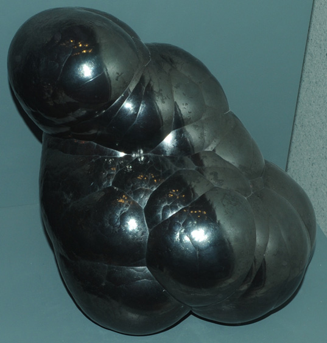 | Fe2O3These samples of hematite are on display at the Smithsonian Museum of Natural History. The size of the sample is about 15 cm high and it is from Cleator Moor, Cumbria, England.
The name hematite comes from the Greek word for blood. The hematite is black, but when powdered or fragmented can take colors ranging from ochre red to jet black. An opaque mineral with a dull lustre, it has been known as "black diamond". Historically it was used in the making and coloration of pottery. It was also made into a paste from which beads were made and hardened, and appears commonly today as black beads in costume jewelry.
The oxide mineral hematite is the major ore of iron. Hematite with this rounded shape is called kidney ore.
|
This sample of hematite from Dolliha mine, Kweenaw Peninsula, Michigan. It is about 12 cm wide. | 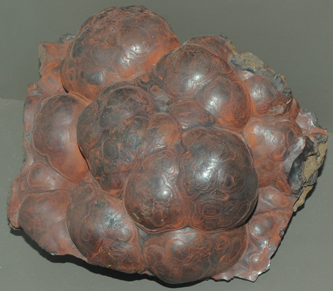
|
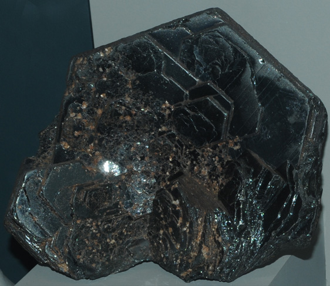
| This hematite sample is Ouro Preto, Minas Gerais, Brazil. It is about 12 cm wide.
|
This sample of hematite is formed with quartz and has a very different appearance. The sample is about 5x8 cm and is from Switzerland. | 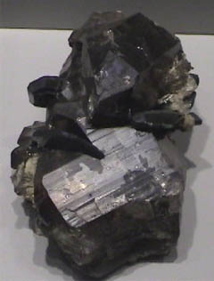
|
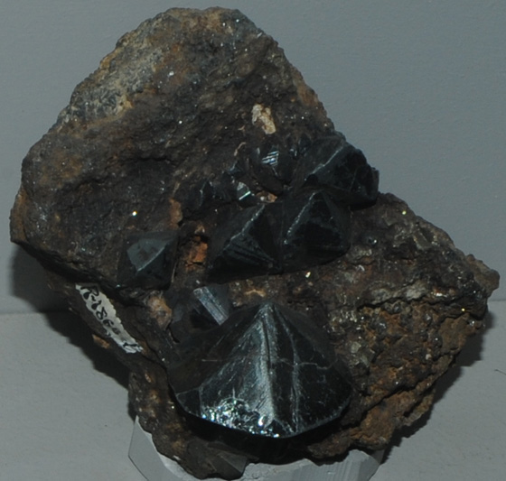
| This hematite sample is from Dognecea, Banat, Romania. It is about 12 cm wide.
|
This hematite is formed with magnetite. The sample is about 14x9 cm and is from Franklin, New Jersey. | 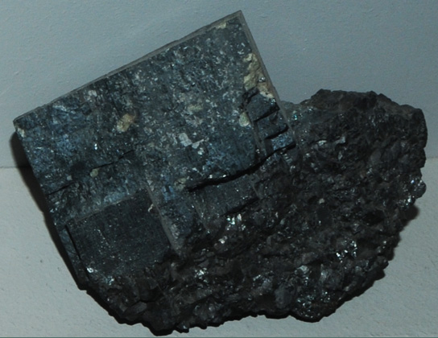
|
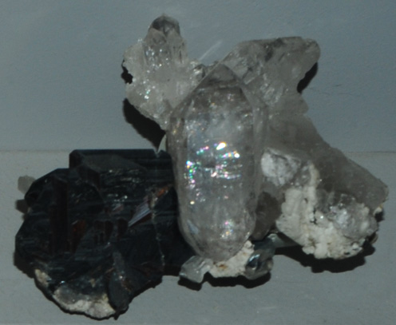
| Formed with rutile and quartz, this hematite sample is from Cavradi, Grissons, Switzerland. It measures about 15x10 cm.
|
The hematite sample at right is from Elba, Toscana, Italy. The sample is about 12 x 20 cm. 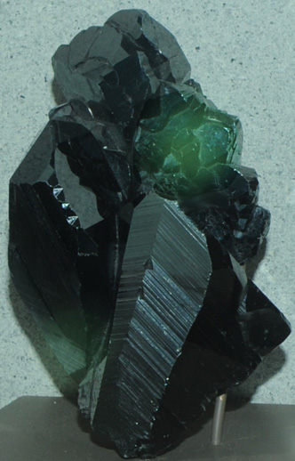This hematite sample is from Brazil and is about 9 x 16 cm. | 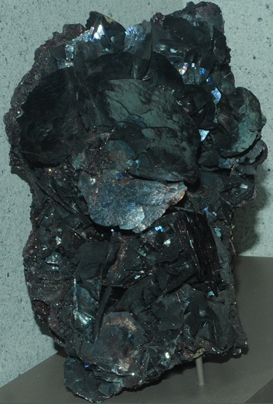
|
| 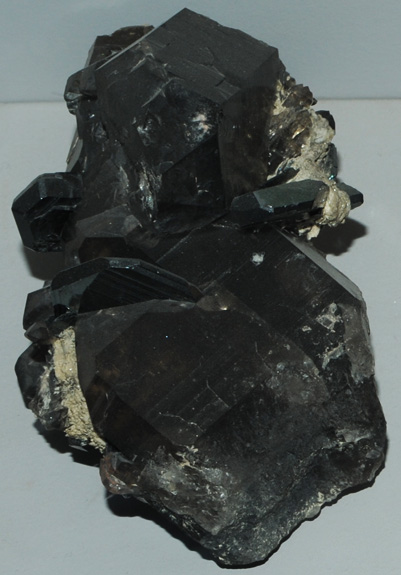 | Formed with quartz, the hematite sample at left is from Switzerland. It measures about 8x16 cm.
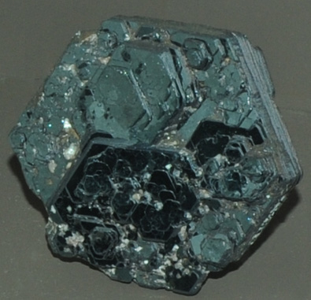
This hematite specimen is from Ouro Preto, Minas Gerais, Brazil. It is about 8 cm wide.
|
Mindat: Hematite
|
Index |